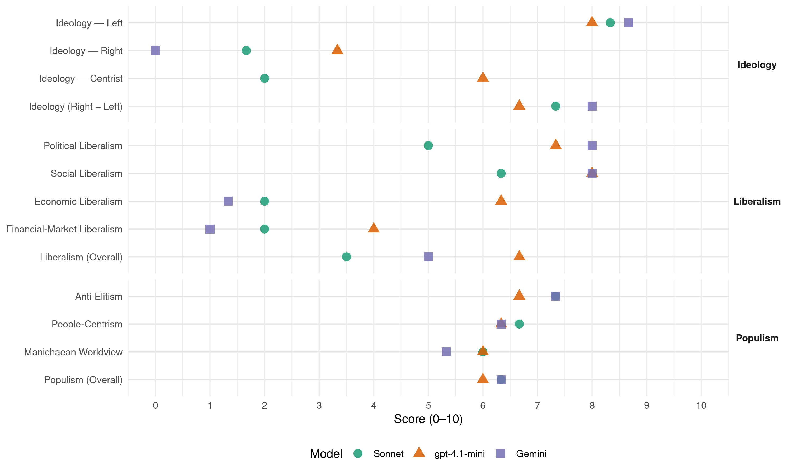

SP (Netherlands, 2002)
manifesto_id 22220_200205
Get full text: This site shows derived annotations and short verbatim quotes only. The full manifesto text is © Manifesto Project / WZB — obtain it via manifesto-project.wzb.eu using the manifesto_id above.
Headline scores
| Dimension | Sonnet | gpt-4.1-mini | Gemini |
|---|---|---|---|
| Populism (Overall) | 6.3 | 6.0 | 6.3 |
| Anti-Elitism | 7.3 | 6.7 | 7.3 |
| People-Centrism | 6.7 | 6.3 | 6.3 |
| Manichaean Worldview | 6.0 | 6.0 | 5.3 |
| Ideology (Right − Left) | 7.3 | 6.7 | 8.0 |
| Liberalism (Overall) | 3.5 | 6.7 | 5.0 |
| Political Liberalism | 5.0 | 7.3 | 8.0 |
| Social Liberalism | 6.3 | 8.0 | 8.0 |
| Economic Liberalism | 2.0 | 6.3 | 1.3 |
| Financial-Market Liberalism | 2.0 | 4.0 | 1.0 |
Evidence per dimension
Economic Liberalism
Gemini · score 1.0 · verified · chunk 1
“de privatiseringsprojecten worden bevroren en de regie van de overheid komt terug”
in de verbetering van zorg, onderwijs, milieu en veiligheid. De privatiseringsprojecten worden bevroren en de regie van de overheid komt terug op belangrijke terreinen als zorg, vervoer
Gemini · score 2.0 · verified · chunk 2
“terugverwerving van de inmiddels geprivatiseerde kabelnetwerken”
De mogelijkheden tot terugverwerving van de inmiddels geprivatiseerde kabelnetwerken dient onderzocht
Gemini · score 1.0 · verified · chunk 3
“stop te komen op alle privatiseringsplannen”
Er dient een stop te komen op alle privatiseringsplannen, met name voor het openbaar vervoer
gpt-4.1-mini · score 7.0 · verified · chunk 1
“De privatiseringsprojecten worden bevroren en de regie van de overheid komt terug op belangrijke terreinen als zorg, vervoer, telecommunicatie en ruimtelijke ordening.”
…1.We investeren grootschalig in de sociale wederopbouw, met name in de verbetering van zorg, onderwijs, milieu en veiligheid. De privatiseringsprojecten worden bevroren en de regie van de overheid komt terug op belangrijke terreinen als zorg, vervoer, telecommunicatie en ruimtelijke ordening. We geven niet méér uit dan we binnenkrijgen, maar geven voorrang aan het inlossen van de maatschappelijke schuld boven de staatsschuld.
gpt-4.1-mini · score 7.0 · verified · chunk 2
“De overheid dient haar verantwoordelijkheid weer te nemen voor de volkshuisvesting”
De al aanwezig tweedeling tussen rijke en arme wijken wordt hierdoor verder versterkt. Daarin moet verandering komen. De overheid hoort haar verantwoordelijkheid weer te nemen voor de volkshuisvesting. Wetgeving moet de belangen van economisch zwakke groepen woningzoekenden beter gaan beschermen.
gpt-4.1-mini · score 5.0 · verified · chunk 3
“marktdenken in de financiering van projecten moet snel worden teruggedrongen”
Marktdenken in de financiering van projecten moet snel worden teruggedrongen. Te vaak is financiële zelfredzaamheid (op korte of lange termijn) een criterium bij projecten waar dit geen rol hoort te spelen, zoals in projecten voor onderwijs, gezondheidszorg of mensenrechten.
Sonnet · score 2.0 · verified · chunk 1
“privatiseringsprojecten worden bevroren”
De privatiseringsprojecten worden bevroren en de regie van de overheid komt terug op belangrijke terreinen als zorg, vervoer, telecommunicatie en ruimtelijke ordening.
Sonnet · score 2.0 · verified · chunk 2
“privatisering van de Nederlandse Spoorwegen een chaos”
Opeenvolgende kabinetten hebben door hun streven naar privatisering van de Nederlandse Spoorwegen een chaos gemaakt. Om een betrouwbaar treinvervoer te krijgen, moet het spoor weer snel als staatsbedrijf gaan functioneren.
Sonnet · score 2.0 · verified · chunk 3
“stop te komen op alle privatiseringsplannen”
Er dient een stop te komen op alle privatiseringsplannen, met name voor het openbaar vervoer en de energiesector. Uitverkoop van de drinkwatervoorziening aan de markt moet geblokkeerd worden.
Financial-Market Liberalism
Gemini · score 1.0 · verified · chunk 1
“er komt een vermogenswinstbelasting met een tarief van 35%”
vanaf 226.890 euro (500.000 gulden) 72% gaan betalen en er komt een vermogenswinstbelasting met een tarief van 35%. 3.Economische aanslagen op natuur en milieu
Gemini · score 1.0 · verified · chunk 2
“noodplan voor herinvoering van de gulden”
Noodplan herinvoering gulden Een noodplan voor herinvoering van de gulden dient paraat
Gemini · score 1.0 · verified · chunk 3
“belasting op internationaal kapitaalverkeer”
indammen zou, het liefst wereldwijd, een belasting op internationaal kapitaalverkeer moeten worden ingevoerd.
gpt-4.1-mini · score 4.0 · verified · chunk 1
“Nederland kiest voor steun aan vreedzame oplossingen van conflicten, gaat uit de overleefde NAVO en verkleint haar leger.”
…Spreiding van kennis, inkomen en macht betekent afwijzen van de neoliberale globalisering, door schuldkwijtschelding aan de Derde Wereld en een betere machtsverdeling binnen de Verenigde Naties, het Internationaal Monetair Fonds en de Wereldbank. Nederland kiest voor steun aan vreedzame oplossingen van conflicten, gaat uit de overleefde NAVO en verkleint haar leger. We besteden het vrijkomend geld onder andere aan verhoging van het budget voor ontwikkelingssamenwerking naar 1% van het Bruto Nationaal Product, als bewijs van internationale solidariteit.
gpt-4.1-mini · score 4.0 · verified · chunk 3
“belasting op internationaal kapitaalverkeer moet worden ingevoerd”
Om de destructieve werking van het ongecontroleerde, geliberaliseerde kapitaalverkeer in te dammen zou, het liefst wereldwijd, een belasting op internationaal kapitaalverkeer moeten worden ingevoerd. De Europese Unie kan als belangrijk economisch blok met de invoering van deze belasting beginnen.
Sonnet · score 2.0 · verified · chunk 1
“vermogenswinstbelasting met een tarief van 35%”
Grootverdieners mogen vanaf 226.890 euro (500.000 gulden) 72% gaan betalen en er komt een vermogenswinstbelasting met een tarief van 35%.
Sonnet · score 3.0 · verified · chunk 2
“belastingconcurrentie tegengaan”
Om de voor elk land schadelijke belastingconcurrentie te stoppen dient een Europees minimumtarief ingevoerd te worden van 35% voor de vennootschapsbelasting.
Sonnet · score 1.0 · verified · chunk 3
“belasting op internationaal kapitaalverkeer”
Om de destructieve werking van het ongecontroleerde, geliberaliseerde kapitaalverkeer in te dammen zou, het liefst wereldwijd, een belasting op internationaal kapitaalverkeer moeten worden ingevoerd.
Political Liberalism
Gemini · score 8.0 · verified · chunk 1
“het revitaliseren van de democratie moet hoofddoel zijn van beleid”
tasten de vitaliteit van onze democratie in ernstige mate aan. Het revitaliseren van de democratie moet hoofddoel zijn van beleid. Brede maatschappelijke discussie over democratie
Gemini · score 8.0 · verified · chunk 2
“rechterlijke macht dient onafhankelijk te zijn”
De rechterlijke macht dient onafhankelijk te zijn en rechtspraak moet in
Gemini · score 8.0 · verified · chunk 3
“zodat het volk van Europa kan beslissen over haar eigen toekomst”
referenda gehouden moeten worden, zodat het volk van Europa kan beslissen over haar eigen toekomst. Voordat richtlijnen
gpt-4.1-mini · score 8.0 · verified · chunk 1
“De uitverkoop van de democratie moet stoppen. Er komt een brede maatschappelijke discussie over bescherming en bevordering van de democratie.”
…Er komen staatssecretarissen voor jongeren en senioren. Het minimumloon gaat gelden vanaf 18 jaar. Pensionering met 65 jaar blijft een onaantastbaar recht. De AOW gaat omhoog. Maatschappelijke betrokkenheid van ouderen blijft in de toekomst cruciaal en wordt dan ook bevorderd. Er komen meer en betaalbare ouderenwoningen. En ouderen krijgen een eerlijke kans om deel te nemen aan nieuwe technologische ontwikkelingen. 14.De uitverkoop van de democratie moet stoppen. Er komt een brede maatschappelijke discussie over bescherming en bevordering van de democratie. Jongeren krijgen een opleiding tot ‘democraat’.
gpt-4.1-mini · score 7.0 · verified · chunk 2
“De rechterlijke macht dient onafhankelijk te zijn en rechtspraak moet in het openbaar plaatsvinden”
Rechterlijke macht onafhankelijk en toegankelijk De rechterlijke macht dient onafhankelijk te zijn en rechtspraak moet in het openbaar plaatsvinden. Daarbij past niet het steeds meer toepassen door het openbaar ministerie van schikkingen buiten de rechter om, vooral in ingewikkelde strafzaken.
gpt-4.1-mini · score 7.0 · verified · chunk 3
“onze democratie ondergeschikt aan de schimmige handelsbelangen”
De WTO-verdragen en de uitspraken van het WTO-geschillenorgaan staan boven Nederlandse wetgeving. Daarmee wordt onze democratie ondergeschikt aan de schimmige handelsbelangen van het internationale bedrijfsleven.
Sonnet · score 6.0 · verified · chunk 1
“revitaliseren van de democratie moet hoofddoel zijn”
Al deze ontwikkelingen tasten de vitaliteit van onze democratie in ernstige mate aan. Het revitaliseren van de democratie moet hoofddoel zijn van beleid.
Sonnet · score 4.0 · verified · chunk 2
“democratische gat dat nu bestaat gedicht is”
Overdracht van bevoegdheden aan de Europese Unie wordt bevroren totdat het geweldige democratische gat dat nu bestaat gedicht is en de bevolking een dergelijke overdracht daadwerkelijk steunt.
Sonnet · score 4.0 · mixed · chunk 3
“democratie en sociale structuur van samenlevingen ernstig aan”
Ook andere internationale organisaties, zoals de NAVO, de Wereldhandelsorganisatie, de Wereldbank en het Internationaal Monetair Fonds, overtroeven de nationale overheden en tasten democratie en sociale structuur van samenlevingen ernstig aan.
Liberalism (Overall)
Gemini · score 5.0 · verified · chunk 1
“het revitaliseren van de democratie moet hoofddoel zijn van beleid”
tasten de vitaliteit van onze democratie in ernstige mate aan. Het revitaliseren van de democratie moet hoofddoel zijn van beleid. Brede maatschappelijke discussie over democratie
Gemini · score 5.0 · verified · chunk 2
“rechterlijke macht dient onafhankelijk te zijn”
De rechterlijke macht dient onafhankelijk te zijn en rechtspraak moet in
Gemini · score 5.0 · verified · chunk 3
“stop te komen op alle privatiseringsplannen”
Er dient een stop te komen op alle privatiseringsplannen, met name voor het openbaar vervoer
gpt-4.1-mini · score 7.0 · verified · chunk 1
“De privatiseringsprojecten worden bevroren en de regie van de overheid komt terug op belangrijke terreinen als zorg, vervoer, telecommunicatie en ruimtelijke ordening.”
…1.We investeren grootschalig in de sociale wederopbouw, met name in de verbetering van zorg, onderwijs, milieu en veiligheid. De privatiseringsprojecten worden bevroren en de regie van de overheid komt terug op belangrijke terreinen als zorg, vervoer, telecommunicatie en ruimtelijke ordening. We geven niet méér uit dan we binnenkrijgen, maar geven voorrang aan het inlossen van de maatschappelijke schuld boven de staatsschuld.
gpt-4.1-mini · score 7.0 · verified · chunk 2
“De rechterlijke macht dient onafhankelijk te zijn en rechtspraak moet in het openbaar plaatsvinden”
Rechterlijke macht onafhankelijk en toegankelijk De rechterlijke macht dient onafhankelijk te zijn en rechtspraak moet in het openbaar plaatsvinden. Daarbij past niet het steeds meer toepassen door het openbaar ministerie van schikkingen buiten de rechter om, vooral in ingewikkelde strafzaken.
gpt-4.1-mini · score 6.0 · verified · chunk 3
“onze democratie ondergeschikt aan de schimmige handelsbelangen”
De WTO-verdragen en de uitspraken van het WTO-geschillenorgaan staan boven Nederlandse wetgeving. Daarmee wordt onze democratie ondergeschikt aan de schimmige handelsbelangen van het internationale bedrijfsleven.
Sonnet · score 4.0 · mixed · chunk 1
“marktwerking leidt tot tweedeling”
Marktwerking leidt, zeker in combinatie met de schaarste in de zorg, tot tweedeling. Er is geen enkel bewijs dat marktwerking leidt tot lagere kosten
Sonnet · score 4.0 · verified · chunk 2
“neoliberaal project, dat zich richt op het vergroten”
De Europese Unie is verworden tot een neoliberaal project, dat zich richt op het vergroten van de macht van grote ondernemingen en het verkleinen van de zeggenschap van het democratische publieke bestuur.
Sonnet · score 3.0 · verified · chunk 3
“neoliberalisme dat de Nederlandse politiek nu al jarenlang domineert”
Zo zijn private rijkdom en collectieve armoede hand in hand gegaan, ideologisch verklaard en aangemoedigd door het neoliberalisme dat de Nederlandse politiek nu al jarenlang domineert.
Anti-Elitism
Gemini · score 8.0 · verified · chunk 1
“Veel politici hebben die verantwoordelijkheid uit het oog verloren”
die toch al weinig reden tot klagen hadden. Veel politici hebben die verantwoordelijkheid uit het oog verloren. Achtereenvolgende regeringen hebben met hun neoliberale
Gemini · score 6.0 · verified · chunk 2
“door de politiek besmet verklaard”
Het begrip ‘sociale volkshuisvesting’ lijkt door de politiek besmet verklaard. Alles draait
Gemini · score 8.0 · verified · chunk 3
“ondemocratische supranationale organen”
veel te veel van onze soevereiniteit al uit handen gegeven aan ondemocratische supranationale organen. De Europese Unie
gpt-4.1-mini · score 8.0 · verified · chunk 1
“politici die jaar op jaar beweerden dat de democratisch gecontroleerde overheid niet bij machte is”
…calculerende burgers voortgebracht. Zij kregen - cynisch gesproken - de burgers die zij verdienden. Ook daarom loopt hun weg nu dood en is het tijd voor een andere weg: de eerste weg links. Diepe sporen De sociale, politieke en culturele ontwikkeling van de afgelopen twintig jaar heeft diepe sporen achtergelaten, in de samenleving, maar ook in de mensen. Veel mensen zijn calculerende burgers geworden, met een ‘ieder voor zich’-mentaliteit. ‘Als het met mij goed gaat, waarom zou ik me dan zorgen maken over een ander?’ denken velen wie het materieel gezien goed gaat. Zij zijn daartoe aangemoedigd door politici die jaar op jaar beweerden dat de democratisch gecontroleerde overheid niet bij machte is de publieke zaak overeind te houden en dat de markt dat maar moest doen. Dit zijn dezelfde politici die niet willen begrijpen dat beschaving niet afgemeten kan worden aan de mate waarin het goed gaat met diegenen die toch al weinig reden tot klagen hadden. Beschaving blijkt veel meer uit de mate waarin mensen die het minder goed getroffen hebben uitzicht op een beter bestaan wordt geboden.
gpt-4.1-mini · score 5.0 · verified · chunk 2
“Geld en macht bepalen de inrichting van ons land en niet het algemeen belang”
De ruimtelijke ordening is veel te veel uit handen gegeven aan particuliere bedrijven. Geld en macht bepalen de inrichting van ons land en niet het algemeen belang en de behoeften van de bevolking. Om die ontwikkeling te stoppen dient de overheid hier de regie weer zelf in handen te nemen om ervoor te zorgen dat het aantal goede en betaalbare woningen niet meer verder af- maar toeneemt.
gpt-4.1-mini · score 7.0 · verified · chunk 3
“de Europese Unie is verworden tot een neoliberaal project, dat zich richt op het vergroten van de macht van grote ondernemingen”
Tot nu toe is veel te veel van onze soevereiniteit al uit handen gegeven aan ondemocratische supranationale organen. De Europese Unie is verworden tot een neoliberaal project, dat zich richt op het vergroten van de macht van grote ondernemingen en het verkleinen van de zeggenschap van het democratische publieke bestuur.
Sonnet · score 8.0 · verified · chunk 1
“neoliberale politiek calculerende, wantrouwende burgers voortgebracht”
Achtereenvolgende regeringen hebben met hun neoliberale politiek calculerende, wantrouwende burgers voortgebracht. Zij kregen - cynisch gesproken - de burgers die zij verdienden.
Sonnet · score 6.0 · verified · chunk 2
“neoliberale bestel wordt cultuur naar de rand gedreven”
In het huidige neoliberale bestel wordt cultuur naar de rand gedreven. Waardevol is vervangen door succesvol
Sonnet · score 8.0 · verified · chunk 3
“neoliberaal project, dat zich richt op het vergroten van de macht van grote ondernemingen”
De Europese Unie is verworden tot een neoliberaal project, dat zich richt op het vergroten van de macht van grote ondernemingen en het verkleinen van de zeggenschap van het democratische publieke bestuur.
Ideology — Centrist
gpt-4.1-mini · score 5.0 · verified · chunk 1
“kiezers ons alternatief: kies de eerste weg links, stem voor sociale wederopbouw! Natuurlijk: het gaat goed met heel veel mensen”
…voor eerlijker delen van de welvaart en voor ecologie boven economie. In plaats van rechtsaf te slaan of rechtdoor te gaan met Paars bieden wij de kiezers ons alternatief: kies de eerste weg links, stem voor sociale wederopbouw! Natuurlijk: het gaat goed met heel veel mensen, althans materieel. Niet alleen met de snel gegroeide groep van miljonairs, maar ook met een groot aantal anderen.
gpt-4.1-mini · score 6.0 · verified · chunk 2
“Iedereen dient zijn bijdrage aan een leefbare en veilige samenleving te leveren”
Om de veiligheid te vergroten mag ook een beroep gedaan worden op de eigen verantwoordelijkheid van burgers. Iedereen dient zijn bijdrage aan een leefbare en veilige samenleving te leveren. Het sociaal toezicht dient bevorderd te worden. De samenleving is van ons allemaal.
gpt-4.1-mini · score 7.0 · verified · chunk 3
“het volk van Europa kan beslissen over haar eigen toekomst”
Over belangrijke en ingrijpende besluiten - zoals het goedkeuren van nieuwe Europese Verdragen en de uitbreiding van de Europese Unie met nieuwe lidstaten - zouden referenda gehouden moeten worden, zodat het volk van Europa kan beslissen over haar eigen toekomst.
Sonnet · score 2.0 · mixed · chunk 1
“mensen die het minder goed getroffen hebben”
Beschaving blijkt veel meer uit de mate waarin mensen die het minder goed getroffen hebben uitzicht op een beter bestaan wordt geboden.
Sonnet · score 2.0 · verified · chunk 3
“democratische gat dat nu bestaat gedicht is”
Overdracht van bevoegdheden aan de Europese Unie wordt bevroren totdat het geweldige democratische gat dat nu bestaat gedicht is en de bevolking een dergelijke overdracht daadwerkelijk steunt.
Ideology — Left
Gemini · score 9.0 · verified · chunk 1
“kies de eerste weg links, stem voor sociale wederopbouw”
rechtdoor te gaan met Paars bieden wij de kiezers ons alternatief: kies de eerste weg links, stem voor sociale wederopbouw! Natuurlijk: het gaat goed met heel veel
Gemini · score 8.0 · verified · chunk 2
“bestrijding van de tweedeling en de armoede”
voorkomen: bestrijding van de tweedeling en de armoede; beter onderwijs; effectieve
Gemini · score 9.0 · verified · chunk 3
“neoliberaal project, dat zich richt op het vergroten van de macht van grote ondernemingen”
De Europese Unie is verworden tot een neoliberaal project, dat zich richt op het vergroten van de macht van grote ondernemingen en het verkleinen
gpt-4.1-mini · score 9.0 · verified · chunk 1
“Kies voor drastische verkleining van de enorme verschillen in inkomens en vermogens, nationaal en internationaal.”
…Samengevat pleiten we ervoor om nu te beginnen met de sociale wederopbouw door de strijd aan te gaan met de sociale tweedeling, zoals die in de achterliggende tijd gegroeid is. Daarvoor zijn drie koerswijzigingen nodig: - Geef de publieke sector weer de plaats die ze verdient: in het hart van onze beschaving. - Kies voor drastische verkleining van de enorme verschillen in inkomens en vermogens, nationaal en internationaal. - Reken af met de kortzichtigheid om natuur en milieu als ondergeschoven kindje te behandelen.
gpt-4.1-mini · score 7.0 · verified · chunk 2
“De overheid hoort haar verantwoordelijkheid weer te nemen voor de volkshuisvesting”
Het begrip ‘sociale volkshuisvesting’ lijkt door de politiek besmet verklaard. Alles draait voortaan om het bedienen van de koopkrachtige consumenten, die behoefte hebben aan ruime, luxe woningen. De al aanwezig tweedeling tussen rijke en arme wijken wordt hierdoor verder versterkt. Daarin moet verandering komen. De overheid hoort haar verantwoordelijkheid weer te nemen voor de volkshuisvesting.
gpt-4.1-mini · score 8.0 · verified · chunk 3
“de vennootschapsbelasting verlaagd van 48% in 1984 tot 34,5% in 2002”
Binnen de Europese Unie worden landen tegen elkaar uitgespeeld door het internationale bedrijfsleven. Zij concurreren via de belastingheffing met elkaar, om bedrijven en daarmee werkgelegenheid en economische groei binnen te halen. De afgelopen jaren is de vennootschapsbelasting (winstbelasting) internationaal steeds verder verlaagd. In Nederland is het tarief van de vennootschapsbelasting verlaagd van 48% in 1984 tot 34,5% in 2002.
Sonnet · score 9.0 · verified · chunk 1
“eerlijker delen van de welvaart”
is een radicale én realistische keuze voor sociale wederopbouw, voor eerlijker delen van de welvaart en voor ecologie boven economie.
Sonnet · score 7.0 · verified · chunk 2
“tweedeling tussen rijke en arme wijken”
Alles draait voortaan om het bedienen van de koopkrachtige consumenten, die behoefte hebben aan ruime, luxe woningen. De al aanwezig tweedeling tussen rijke en arme wijken wordt hierdoor verder versterkt.
Sonnet · score 9.0 · verified · chunk 3
“belasting op internationaal kapitaalverkeer moeten worden ingevoerd”
Om de destructieve werking van het ongecontroleerde, geliberaliseerde kapitaalverkeer in te dammen zou, het liefst wereldwijd, een belasting op internationaal kapitaalverkeer moeten worden ingevoerd.
Ideology (Right − Left)
Gemini · score 8.0 · verified · chunk 1
“kies de eerste weg links, stem voor sociale wederopbouw”
rechtdoor te gaan met Paars bieden wij de kiezers ons alternatief: kies de eerste weg links, stem voor sociale wederopbouw! Natuurlijk: het gaat goed met heel veel
Gemini · score 8.0 · verified · chunk 2
“bestrijding van de tweedeling en de armoede”
voorkomen: bestrijding van de tweedeling en de armoede; beter onderwijs; effectieve
Gemini · score 8.0 · verified · chunk 3
“neoliberaal project, dat zich richt op het vergroten van de macht van grote ondernemingen”
De Europese Unie is verworden tot een neoliberaal project, dat zich richt op het vergroten van de macht van grote ondernemingen en het verkleinen
gpt-4.1-mini · score 7.0 · verified · chunk 1
“Daarom loopt de rechtse weg van het neoliberalisme dood. En daarom wordt het tijd voor de eerste weg links.”
…de samenleving splitst, onder meer langs sociaal-economische en etnische lijnen en onze nationale soevereiniteit verwatert, ten voordele van ondemocratische supranationale organen. Daarom loopt de rechtse weg van het neoliberalisme dood. En daarom wordt het tijd voor de eerste weg links. Diepe sporen De sociale, politieke en culturele ontwikkeling van de afgelopen twintig jaar heeft diepe sporen achtergelaten…
gpt-4.1-mini · score 6.0 · verified · chunk 2
“Geld en macht bepalen de inrichting van ons land en niet het algemeen belang”
De ruimtelijke ordening is veel te veel uit handen gegeven aan particuliere bedrijven. Geld en macht bepalen de inrichting van ons land en niet het algemeen belang en de behoeften van de bevolking. Om die ontwikkeling te stoppen dient de overheid hier de regie weer zelf in handen te nemen om ervoor te zorgen dat het aantal goede en betaalbare woningen niet meer verder af- maar toeneemt.
gpt-4.1-mini · score 7.0 · verified · chunk 3
“De Europese Unie is verworden tot een neoliberaal project, dat zich richt op het vergroten van de macht van grote ondernemingen”
Tot nu toe is veel te veel van onze soevereiniteit al uit handen gegeven aan ondemocratische supranationale organen. De Europese Unie is verworden tot een neoliberaal project, dat zich richt op het vergroten van de macht van grote ondernemingen en het verkleinen van de zeggenschap van het democratische publieke bestuur.
Sonnet · score 8.0 · verified · chunk 1
“strijd aan te gaan met de sociale tweedeling”
pleiten we ervoor om nu te beginnen met de sociale wederopbouw door de strijd aan te gaan met de sociale tweedeling
Sonnet · score 6.0 · verified · chunk 2
“bestrijding van de tweedeling en de armoede”
De landelijke overheid moet de voorwaarden scheppen waardoor criminaliteit zoveel mogelijk wordt voorkomen: bestrijding van de tweedeling en de armoede; beter onderwijs; effectieve sociale zekerheid
Sonnet · score 8.0 · verified · chunk 3
“anti-corporatief, herverdeling, sociale gelijkheid”
We willen voor de toekomst een meer nivellerend belastingstelsel. We stellen voor dat boven op het huidige toptarief van 52% weer een belastingschijf van 72% komt, in ieder geval voor inkomens boven 226.890 euro.
Ideology — Right
Gemini · score 0.0 · verified · chunk 2
“pal staan voor een ruimhartig beleid”
Nederland moet pal staan voor een ruimhartig beleid voor politieke vluchtelingen
gpt-4.1-mini · score 3.0 · verified · chunk 1
“Nederland stopt met het overdragen van nog meer bevoegdheden aan de ondemocratische Europese Unie.”
…Migranten krijgen eerder stemrecht voor de gemeente en voortaan ook voor de provincie. Nederland stopt met het overdragen van nog meer bevoegdheden aan de ondemocratische Europese Unie. 15.Spreiding van kennis, inkomen en macht betekent afwijzen van de neoliberale globalisering, door schuldkwijtschelding aan de Derde Wereld en een betere machtsverdeling binnen de Verenigde Naties, het Internationaal Monetair Fonds en de Wereldbank.
gpt-4.1-mini · score 3.0 · verified · chunk 2
“Segregatie tegengaan In ons land horen autochtonen én allochtonen recht te hebben op vrijheid van wonen en onderwijs”
Segregatie tegengaan In ons land horen autochtonen én allochtonen recht te hebben op vrijheid van wonen en onderwijs, dus ook op gemengd wonen en gemengd onderwijs. In de praktijk is daarvan helaas vaak geen sprake. Witte wijken en scholen zullen daarom van het slot moeten. Gemeenten moeten in samenwerking met de woningbouwverenigingen een anti-segregatieplan opstellen en uitvoeren.
gpt-4.1-mini · score 4.0 · verified · chunk 3
“de twijfel bij de bevolking in de lidstaten is erg groot”
De twijfel bij de bevolking in de lidstaten is erg groot. Verdere federalisering van de Europese Unie en de opbouw van een Europese superstaat is schadelijk voor onze democratie en dus onaanvaardbaar.
Sonnet · score 2.0 · verified · chunk 1
“nationale soevereiniteit verwatert”
onze nationale soevereiniteit verwatert, ten voordele van ondemocratische supranationale organen.
Sonnet · score 2.0 · verified · chunk 2
“onbeperkt toelaten van economische migranten”
maar met de erkenning van het individuele recht om een betere toekomst te zoeken moet ook onderkend worden dat onbeperkt toelaten van economische migranten om velerlei redenen niet mogelijk is.
Sonnet · score 1.0 · verified · chunk 3
“in goede banen leiden van migratie”
Er dient meer samenwerking in Europa te komen inzake milieubescherming, criminaliteitsbestrijding, beperking van onnodige mobiliteit, tegengaan van belastingconcurrentie en het in goede banen leiden van migratie.
Manichaean Worldview
Gemini · score 6.0 · verified · chunk 1
“de communicatie-infrastructuur moet uit de greep van het grote geld”
en een bevriezing van de openbaar vervoerstarieven. De communicatie-infrastructuur moet uit de greep van het grote geld. 8.Onderwijs moet als investering
Gemini · score 4.0 · verified · chunk 2
“neoliberale project, dat zich richt”
De Europese Unie is verworden tot een neoliberaal project, dat zich richt op het vergroten
Gemini · score 6.0 · verified · chunk 3
“schimmige handelsbelangen van het internationale bedrijfsleven”
onze democratie ondergeschikt aan de schimmige handelsbelangen van het internationale bedrijfsleven. Binnen de WTO
gpt-4.1-mini · score 7.0 · verified · chunk 1
“de rechtse weg van het neoliberalisme dood. En daarom wordt het tijd voor de eerste weg links.”
…oncontroleerbare machten die economie stellen boven ecologie; de vrije toegang tot publieke diensten als zorg en onderwijs versmalt; de cultuur vervlakt; de veiligheid van de burgers staat onder druk; de samenleving splitst, onder meer langs sociaal-economische en etnische lijnen en onze nationale soevereiniteit verwatert, ten voordele van ondemocratische supranationale organen. Daarom loopt de rechtse weg van het neoliberalisme dood. En daarom wordt het tijd voor de eerste weg links. Diepe sporen De sociale, politieke en culturele ontwikkeling van de afgelopen twintig jaar heeft diepe sporen achtergelaten…
gpt-4.1-mini · score 5.0 · verified · chunk 2
“Oorlog en armoede zijn de voornaamste oorzaken van de geweldige vluchtelingen- en migratiestromen”
De tegenstellingen tussen arm en rijk, Zuid en Noord, groeien met het jaar. Oorlog en armoede zijn de voornaamste oorzaken van de geweldige vluchtelingen- en migratiestromen over de aardbol. Het grootste deel van de daaruit voortvloeiende ellende wordt gedragen door de landen die daartoe het slechtste zijn uitgerust.
gpt-4.1-mini · score 6.0 · verified · chunk 3
“onaanvaardbaar”
De twijfel bij de bevolking in de lidstaten is erg groot. Verdere federalisering van de Europese Unie en de opbouw van een Europese superstaat is schadelijk voor onze democratie en dus onaanvaardbaar.
Sonnet · score 7.0 · verified · chunk 1
“rechtse weg van het neoliberalisme dood”
Daarom loopt de rechtse weg van het neoliberalisme dood. En daarom wordt het tijd voor de eerste weg links.
Sonnet · score 4.0 · verified · chunk 2
“Geld en macht bepalen de inrichting van ons land”
De ruimtelijke ordening is veel te veel uit handen gegeven aan particuliere bedrijven. Geld en macht bepalen de inrichting van ons land en niet het algemeen belang en de behoeften van de bevolking.
Sonnet · score 7.0 · verified · chunk 3
“private rijkdom en collectieve armoede hand in hand gegaan”
Zo zijn private rijkdom en collectieve armoede hand in hand gegaan, ideologisch verklaard en aangemoedigd door het neoliberalisme dat de Nederlandse politiek nu al jarenlang domineert.
People-Centrism
Gemini · score 7.0 · verified · chunk 1
“onder druk van grote delen van de bevolking”
vieren we het eeuwfeest van de Nederlandse democratie. Dan zal het 100 jaar geleden zijn dat onder druk van grote delen van de bevolking het algemeen kiesrecht werd ingevoerd
Gemini · score 5.0 · verified · chunk 2
“behoeften van de bevolking”
en niet het algemeen belang en de behoeften van de bevolking. Om die ontwikkeling te
Gemini · score 7.0 · verified · chunk 3
“zodat het volk van Europa kan beslissen”
referenda gehouden moeten worden, zodat het volk van Europa kan beslissen over haar eigen toekomst.
gpt-4.1-mini · score 7.0 · verified · chunk 1
“kies de eerste weg links, stem voor sociale wederopbouw! Natuurlijk: het gaat goed met heel veel mensen”
…en voor ecologie boven economie. In plaats van rechtsaf te slaan of rechtdoor te gaan met Paars bieden wij de kiezers ons alternatief: kies de eerste weg links, stem voor sociale wederopbouw! Natuurlijk: het gaat goed met heel veel mensen, althans materieel. Niet alleen met de snel gegroeide groep van miljonairs, maar ook met een groot aantal anderen.
gpt-4.1-mini · score 6.0 · verified · chunk 2
“De samenleving is van ons allemaal”
Om de veiligheid te vergroten mag ook een beroep gedaan worden op de eigen verantwoordelijkheid van burgers. Iedereen dient zijn bijdrage aan een leefbare en veilige samenleving te leveren. Het sociaal toezicht dient bevorderd te worden. De samenleving is van ons allemaal. Preventie en toezicht De nadruk bij de bestrijding van criminaliteit moet komen te liggen op maatschappelijke preventie.
gpt-4.1-mini · score 6.0 · verified · chunk 3
“het volk van Europa kan beslissen over haar eigen toekomst”
Over belangrijke en ingrijpende besluiten - zoals het goedkeuren van nieuwe Europese Verdragen en de uitbreiding van de Europese Unie met nieuwe lidstaten - zouden referenda gehouden moeten worden, zodat het volk van Europa kan beslissen over haar eigen toekomst.
Sonnet · score 8.0 · verified · chunk 1
“kiezers ons alternatief: kies de eerste weg links”
bieden wij de kiezers ons alternatief: kies de eerste weg links, stem voor sociale wederopbouw!
Sonnet · score 5.0 · verified · chunk 2
“De samenleving is van ons allemaal”
Om de veiligheid te vergroten mag ook een beroep gedaan worden op de eigen verantwoordelijkheid van burgers. Iedereen dient zijn bijdrage aan een leefbare en veilige samenleving te leveren. Het sociaal toezicht dient bevorderd te worden. De samenleving is van ons allemaal.
Sonnet · score 7.0 · verified · chunk 3
“het volk van Europa kan beslissen over haar eigen toekomst”
zodat het volk van Europa kan beslissen over haar eigen toekomst. Voordat richtlijnen van de Europese Unie hier geldig worden, zouden ze eerst door het Nederlandse parlement moeten worden goedgekeurd.
Populism (Overall)
Gemini · score 7.0 · verified · chunk 1
“Veel politici hebben die verantwoordelijkheid uit het oog verloren”
die toch al weinig reden tot klagen hadden. Veel politici hebben die verantwoordelijkheid uit het oog verloren. Achtereenvolgende regeringen hebben met hun neoliberale
Gemini · score 5.0 · verified · chunk 2
“door de politiek besmet verklaard”
Het begrip ‘sociale volkshuisvesting’ lijkt door de politiek besmet verklaard. Alles draait
Gemini · score 7.0 · verified · chunk 3
“ondemocratische supranationale organen”
veel te veel van onze soevereiniteit al uit handen gegeven aan ondemocratische supranationale organen. De Europese Unie
gpt-4.1-mini · score 7.0 · verified · chunk 1
“Daarom loopt de rechtse weg van het neoliberalisme dood. En daarom wordt het tijd voor de eerste weg links.”
…de samenleving splitst, onder meer langs sociaal-economische en etnische lijnen en onze nationale soevereiniteit verwatert, ten voordele van ondemocratische supranationale organen. Daarom loopt de rechtse weg van het neoliberalisme dood. En daarom wordt het tijd voor de eerste weg links. Diepe sporen De sociale, politieke en culturele ontwikkeling van de afgelopen twintig jaar heeft diepe sporen achtergelaten…
gpt-4.1-mini · score 5.0 · verified · chunk 2
“Geld en macht bepalen de inrichting van ons land en niet het algemeen belang”
De ruimtelijke ordening is veel te veel uit handen gegeven aan particuliere bedrijven. Geld en macht bepalen de inrichting van ons land en niet het algemeen belang en de behoeften van de bevolking. Om die ontwikkeling te stoppen dient de overheid hier de regie weer zelf in handen te nemen om ervoor te zorgen dat het aantal goede en betaalbare woningen niet meer verder af- maar toeneemt.
gpt-4.1-mini · score 6.0 · verified · chunk 3
“De Europese Unie is verworden tot een neoliberaal project, dat zich richt op het vergroten van de macht van grote ondernemingen”
Tot nu toe is veel te veel van onze soevereiniteit al uit handen gegeven aan ondemocratische supranationale organen. De Europese Unie is verworden tot een neoliberaal project, dat zich richt op het vergroten van de macht van grote ondernemingen en het verkleinen van de zeggenschap van het democratische publieke bestuur.
Sonnet · score 7.0 · verified · chunk 1
“twintig jaar rechtse, neoliberale politiek”
Na twintig jaar rechtse, neoliberale politiek in drie varianten (CDA/VVD, CDA/PvdA, en PvdA/VVD/D66) loopt deze weg dood op maatschappelijke tweedeling
Sonnet · score 5.0 · verified · chunk 2
“uitverkoop van het openbaar vervoer te stoppen”
Het is hoog tijd om de uitverkoop van het openbaar vervoer te stoppen. De zeggenschap over bus, trein, tram en metro hoort in overheidshanden.
Sonnet · score 7.0 · verified · chunk 3
“uitverkoop van de publieke zaak te ver is doorgeschoten”
In de samenleving groeit echter het besef dat deze uitverkoop van de publieke zaak te ver is doorgeschoten. In de meeste gevallen is de belofte van lagere prijzen en betere service niet waargemaakt.
Social Liberalism